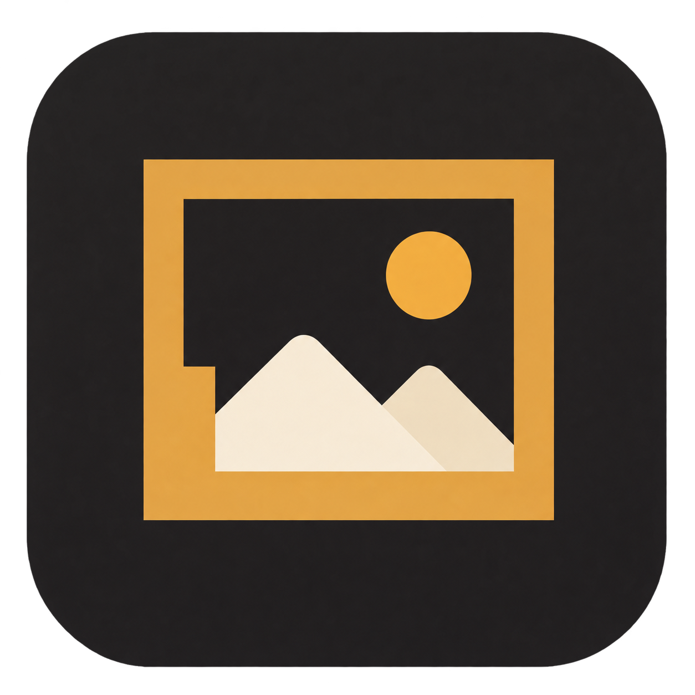
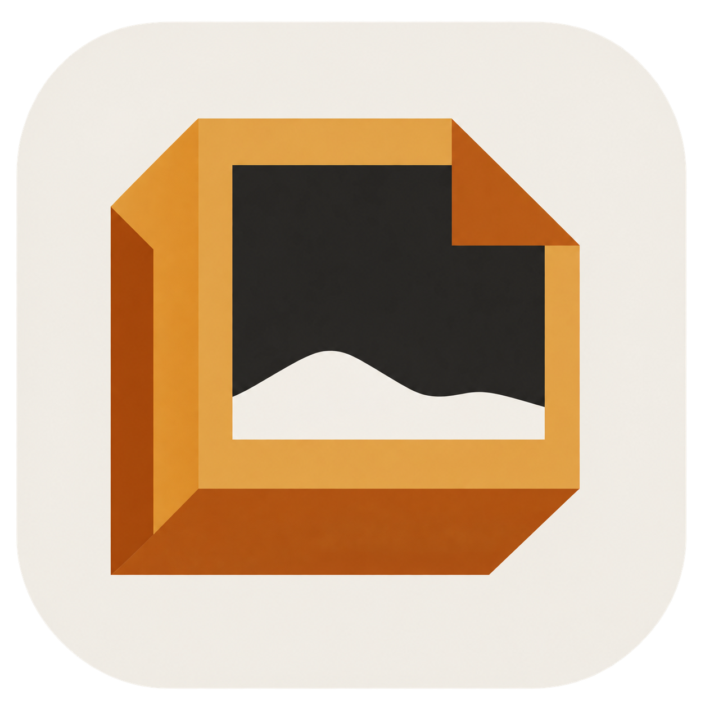
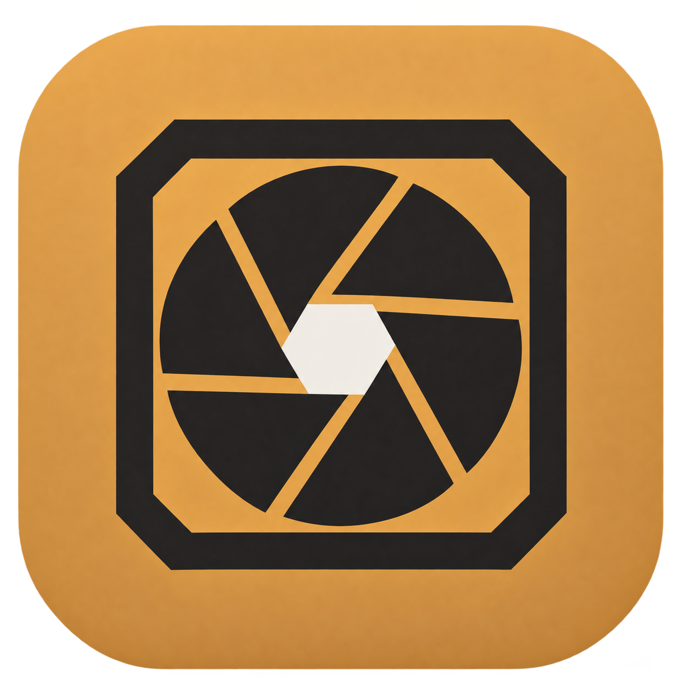

LumaCraft · 应用图标概念
三个品牌方向，下面同时查看小尺寸效果。现有 UI 图标继续沿用。

A · 光影画框
突出照片与边框，呼应“框印工坊”。
64 / 32 / 16 px 预览

B · 折角照片
以纸张折角表现照片制作与手工质感。
64 / 32 / 16 px 预览

C · 光圈印记
用光圈与方框表达摄影工具的属性。
64 / 32 / 16 px 预览
当前为概念稿。选定方向后需精修透明边缘、统一造型，并制作正式 ICO 和移动端图标。